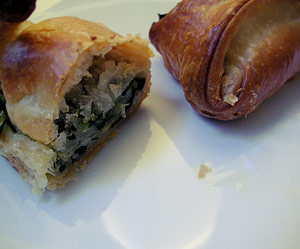

Apero-Blätterteigkrapfen
4,5 von 6rosmarin und einige salbei- und basilikumblätter fein schneiden. 6 knoblauchzehen pressen und dazugeben. olivenöl salz und pfeffer dazugeben. die kräutermischung auf einem blätterteig ausbreiten. mit in feine streifen geschnittene zucchini darüber auslegen. einrollen und bei 200 grad ca. 20 minuten backen
